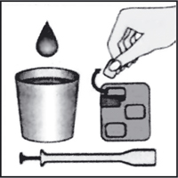
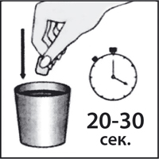
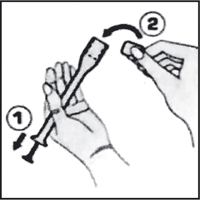
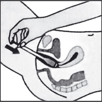
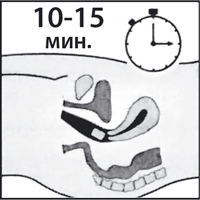
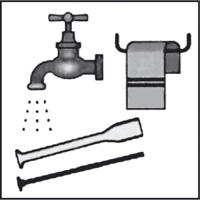

|
 |
| ЭЛЬЖИНА® (ELGYNA) таб.вагинальные | ||||||||||||
|
Клинико-фармакологическая группа: Препарат с антибактериальным, противопротозойным, противогрибковым и противовоспалительным действием для местного применения в гинекологии Номер и дата регистрации: ЛП-000980 от 18.10.11 Код ATX: G01BA |
Владелец регистрационного удостоверения: зарегистрировано и произведено Представительство: | |||||||||||
Форма выпуска, состав и упаковка Таблетки вагинальные белого или почти белого с желтоватым оттенком цвета, плоские, продолговатой формы с фаской; допускается наличие мраморности.
Вспомогательные вещества: лактозы моногидрат - 305.4 мг, крахмал картофельный - 90 мг, кросповидон - 24 мг, повидон K17 (поливинилпирролидон низкомолекулярный) - 19 мг, тальк - 18 мг, кальция стеарат - 12 мг, кремния диоксид коллоидный - 12 мг, полисорбат-20 - 3 мг. 3 шт. - упаковки ячейковые контурные (1) - пачки картонные. | ||||||||||||
| ||||||||||||
Описание препарата основано на официально утвержденной инструкции по применению и утверждено компанией-производителем для издания 2022 г. | ||||||||||||
Фармакологическое действие |
Фармакокинетика |
Показания |
Режим дозирования |
Побочное действие |
Противопоказания |
Беременность и лактация |
Особые указания |
Передозировка |
Лекарственное взаимодействие |
Условия хранения и сроки годности |
Условия реализации
Фармакологическое действие
Комбинированный препарат с антибактериальным, противопротозойным, противогрибковым и противовоспалительным действием для местного применения в гинекологии, эффективность которого обусловлена суммарным действием входящих компонентов. Орнидазол - противопротозойное средство с противомикробным действием. Активен в отношении Trichomonas vaginalis, Entamoeba histolytica, Giardia lamblia (Giardia intestinalis), а также некоторых анаэробных бактерий, таких как Bacteroides spp. и Clostridium spp., Fusobacterium spp. и анаэробных кокков: Peptostreptococcus spp. Механизм действия обусловлен угнетением синтеза и повреждением структуры ДНК возбудителей. Неомицин - антибиотик широкого спектра действия группы аминогликозидов. Активен в отношении ряда грамположительных и грамотрицательных аэробных микроорганизмов. Устойчивость микроорганизмов к неомицину развивается медленно и в небольшой степени. Эконазол сочетает в себе противогрибковое действие в отношении дерматофитов Trichophyton spp., Microsporum spp., Epidermophyton spp., дрожжевых и дрожжеподобных грибов рода Candida с антибактериальным действием по отношению к грамположительным бактериям Staphylococcus spp., Streptococcus spp. Механизм действия заключается в подавлении синтеза эргостерола клеточной мембраны грибов. Действует фунгицидно и бактерицидно. Преднизолон - дегидрированный аналог гидрокортизона, оказывает противовоспалительное, противоаллергическое и противозудное действие. Способствует быстрому уменьшению зуда и жжения. Фармакокинетика
При интравагинальном применении системная абсорбция действующих веществ незначительна, препарат практически не всасывается с поверхности слизистой оболочки влагалища. Показания
Режим дозирования
Препарат применяют интравагинально. По 1 вагинальной таблетке ежедневно перед сном. Средняя продолжительность курса лечения - 6-9 дней. Перед применением препарата рекомендуется вымыть руки и провести гигиену половых органов. Введение вагинальных таблеток с аппликатором Извлечь аппликатор из упаковки, подготовить блистер с вагинальными таблетками Эльжина® и воду комнатной температуры.  Извлечь одну таблетку из упаковки и смочить ее в воде в течение 20-30 сек.  Выдвинуть поршень аппликатора до упора (1). Поместить смоченную вагинальную таблетку в специальное отверстие аппликатора до упора (2).  В положении лежа на спине, при слегка согнутых ногах, осторожно ввести аппликатор во влагалище как можно глубже, но так, чтобы не вызывать неприятных ощущений. Медленным нажатием на поршень аппликатора до упора ввести таблетку во влагалище.  Осторожно извлечь аппликатор. После введения таблетки следует лежать в течение 10-15 мин.  После использования полностью извлечь поршень из корпуса аппликатора, промыть поршень и корпус теплой мыльной водой, затем теплой проточной водой, просушить.  Не помещать аппликатор в горячую воду или кипяток. Не использовать аппликатор, если он поврежден. Введение вагинальных таблеток без аппликатора Подготовить блистер с вагинальными таблетками Эльжина® и воду комнатной температуры. Извлечь одну таблетку из упаковки и смочить ее в воде в течение 20-30 сек. В положении лежа на спине, при слегка согнутых ногах, осторожно ввести таблетку во влагалище с помощью среднего пальца руки, как можно глубже. После введения таблетки следует лежать в течение 10-15 мин. Побочное действие
Со стороны кожи и подкожной клетчатки: шелушение кожи, эритема. Аллергические реакции: ангионевротический отек, крапивница, контактный дерматит. Местные реакции: жжение, боль, раздражение и отек в месте введения, сухость влагалища (особенно в начале лечения). Однако эти нежелательные реакции также могут быть связаны с симптомами вагинальной инфекции. Если любые из указанных в инструкции побочных эффектов усугубляются или отмечаются любые другие побочные эффекты, не указанные в инструкции, пациентке необходимо прекратить применение препарата и сообщить об этом врачу. Противопоказания
С осторожностью
Применение при беременности и кормлении грудью
Препарат противопоказан к применению при беременности и в период грудного вскармливания. Особые указания
Препарат Эльжина® предназначен только для интравагинального применения. Препарат содержит вспомогательные вещества, которые иногда не полностью растворяются во влагалище. Поэтому остатки вагинальной таблетки можно обнаружить на нижнем белье. На эффективность препарата это не влияет. В период лечения рекомендуется чаще менять прокладки и нижнее белье. Если симптомы заболевания сохраняются после завершения курса лечения, пациентке следует обратиться к врачу для уточнения диагноза. Во время лечения следует воздержаться от половых контактов. Рекомендуется проконсультироваться с врачом о необходимости одновременного лечения полового партнера. Лекарственный препарат не следует передавать другим лицам, поскольку он может причинить им вред даже при наличии тех же симптомов, что и у пациента. Влияние на способность к управлению транспортными средствами и механизмами Препарат Эльжина® не влияет на способность управлять транспортом или заниматься другими потенциально опасными видами деятельности, требующими повышенной концентрации внимания и быстроты психомоторных реакций. Передозировка
При интравагинальном применении в соответствии с инструкцией передозировка маловероятна. При случайном приеме препарата внутрь возможны следующие симптомы: потеря сознания, головная боль, головокружение, тремор, судороги, тошнота, рвота, диарея. Лечение: симптоматическая терапия. Лекарственное взаимодействие
В связи с тем, что действующие вещества, входящие в состав вагинальных таблеток, абсорбируются незначительно, взаимодействие с другими лекарственными средствами при интравагинальном применении маловероятно. Однако пациентки, принимающие непрямые антикоагулянты, такие как варфарин и аценокумарол, должны соблюдать осторожность и следить за параметрами свертываемости крови. Пациенткам рекомендуется информировать врача об одновременном лечении другими лекарственными средствами. |
||||||||||||
Вернуться наверх |
||||||||||||
Copyright © Справочник Видаль «Лекарственные препараты в России», Москва, Россия